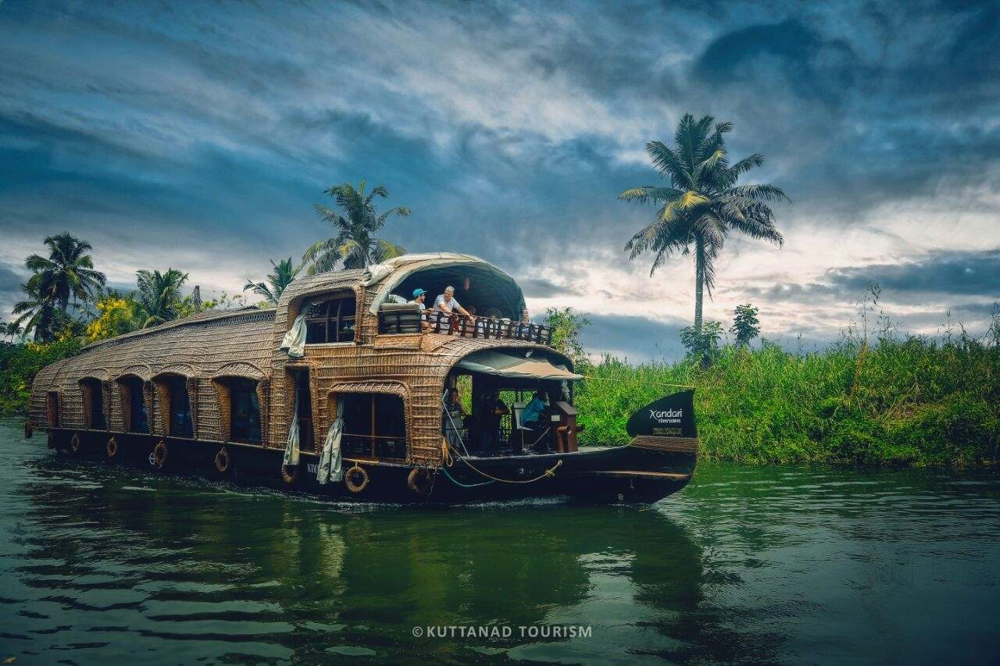
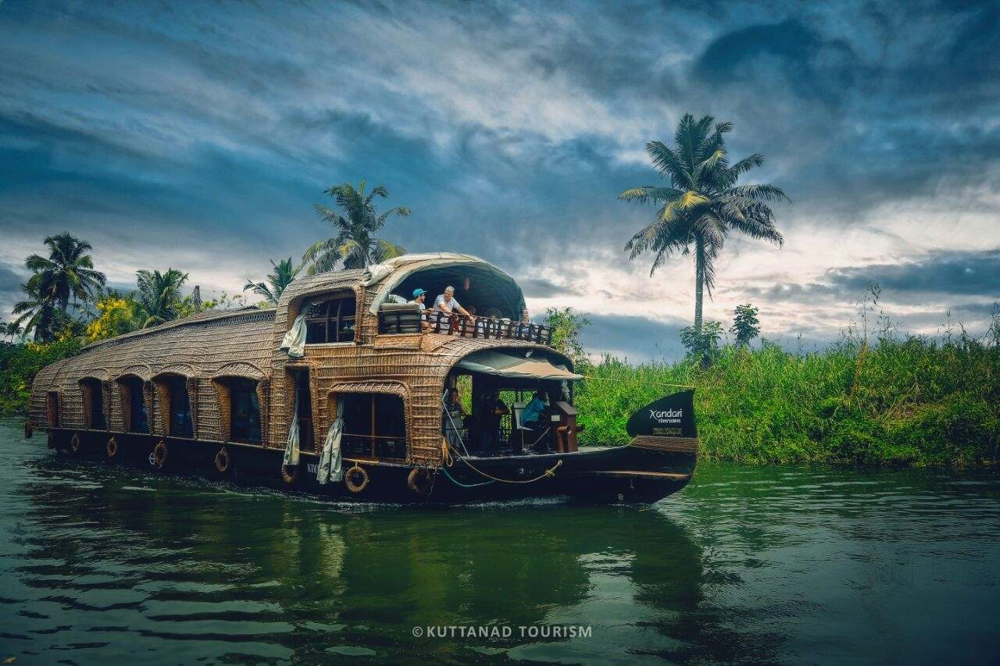

Kuttanad backwaters
One of the best places to visit in Alleppey is Kuttanad Backwaters. This isn’t a place, it’s a phenomenon. It is a spectacular lagoon, surrounded by the beauty of lakes, rivers, canals, misty mountains and ethereal landscapes. The experience of floating along the pristine backwaters on a houseboat is inexplicable. You will have to live it to know it! The place is also known as the ‘Rice bowl of Kerala,’ for its stunning rice plantations. If you are in Alleppey for a day, then this place should be your entire itinerary.
 
